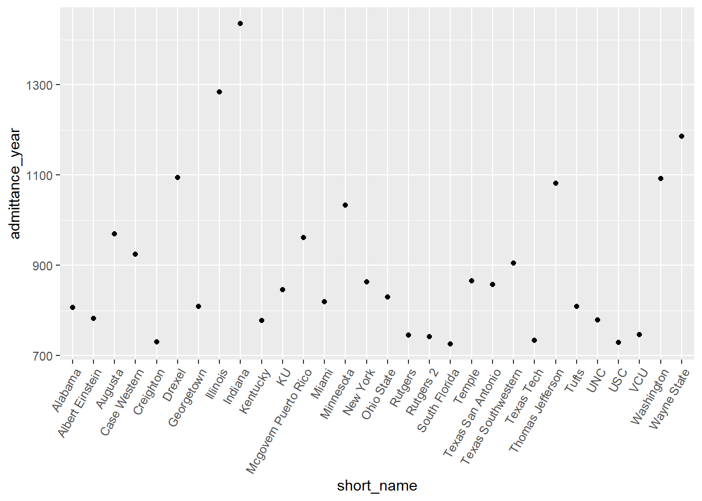
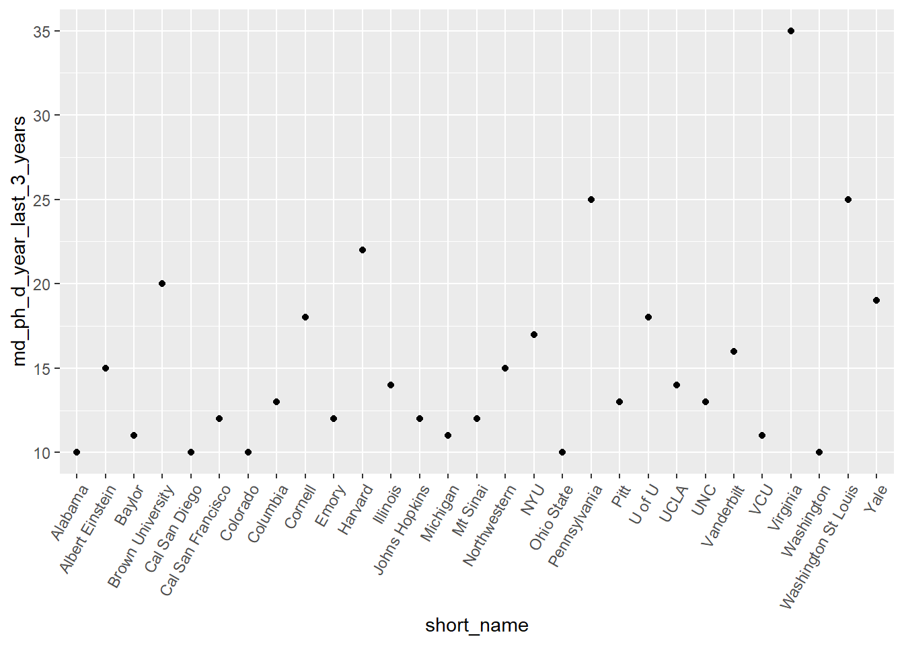
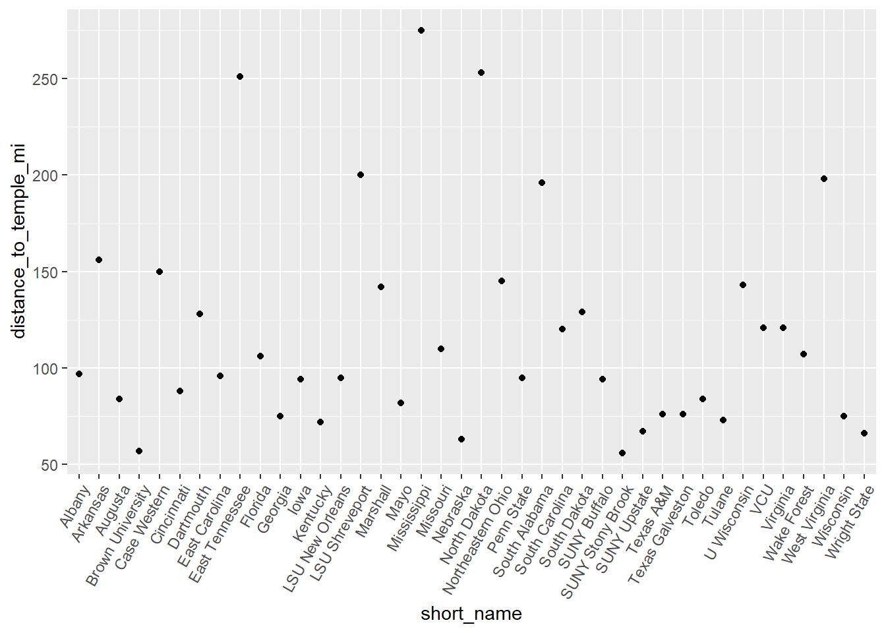
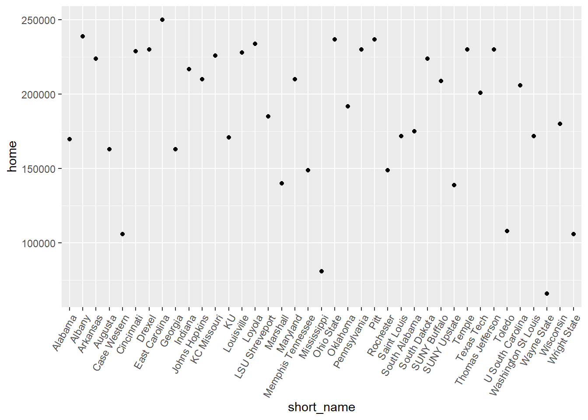

Warning in validateCoords(lng, lat, funcName): Data contains 3 rows with either
missing or invalid lat/lon values and will be ignoredMD / PhD
Welcome to my meta analysis of the medical schools I am hoping to attend. I need to compile a list of schools to apply to for next year, and preparation on my end will be the best way that I can prepare for that, as I have no idea which schools I am interested in applying to.
Overview
Maps
Here is a description of all the MD/PhD programs offered in the nation. There are 115 schools, and my initial impression is how densely populated the schools are back east. Not a ton of Western options.
Data
Total Admittance
Here is the top 30 Total MD Admittance according to school.
short_name admittance_year
1 Indiana 1436
2 Illinois 1284
3 Wayne State 1186
4 Drexel 1095
5 Washington 1092
6 Thomas Jefferson 1082
7 Minnesota 1033
8 Augusta 969
9 Mcgovern Puerto Rico 962
10 Case Western 924
11 Texas Southwestern 905
12 Temple 866
13 New York 863
14 Texas San Antonio 857
15 KU 846
16 Ohio State 830
17 Miami 819
18 Georgetown 809
19 Tufts 809
20 Alabama 806
21 Albert Einstein 782
22 UNC 779
23 Kentucky 778
24 VCU 746
25 Rutgers 745
26 Rutgers 2 742
27 Texas Tech 733
28 Creighton 730
29 USC 729
30 South Florida 726
This is for medical students overall, not just MD/PhD students. It seems awfully toploaded. This is a good basis to understand where my odds of acceptance may be higher than in others.
Exploring admittance for MD/PhD students is important as well.
MD/PhD Admittance
Here is the top 30 MD/PhD admittance according to school.
short_name md_ph_d_year_last_3_years
1 Virginia 35
2 Washington St Louis 25
3 Pennsylvania 25
4 Harvard 22
5 Brown University 20
6 Yale 19
7 U of U 18
8 Cornell 18
9 NYU 17
10 Vanderbilt 16
11 Northwestern 15
12 Albert Einstein 15
13 Illinois 14
14 UCLA 14
15 Pitt 13
16 Pitt 13
17 UNC 13
18 Columbia 13
19 Johns Hopkins 12
20 Cal San Francisco 12
21 Emory 12
22 Mt Sinai 12
23 VCU 11
24 Michigan 11
25 Baylor 11
26 Alabama 10
27 Colorado 10
28 Washington 10
29 Ohio State 10
30 Cal San Diego 10
Not many students admitted each year across the board. It may be interesting to see the percentage of MD/PhD students admitted versus MD students admitted.
MD vs MD/PhD Admittance %
short_name admitpercent
1 Washington St Louis 5.580357
2 Virginia 5.537975
3 Yale 4.656863
4 NYU 4.156479
5 Pennsylvania 3.993610
6 Cornell 3.991131
7 Vanderbilt 3.911980
8 U of U 3.680982
9 Brown University 3.294893
10 Harvard 3.147353
11 Johns Hopkins 2.553191
12 Northwestern 2.311248
13 Mt Sinai 2.259887
14 Columbia 2.253033
15 Mayo 2.200489
16 Pitt 2.131148
17 Pitt 2.131148
18 Rochester 2.054795
19 Emory 2.023609
20 UCLA 1.941748
21 Cal San Diego 1.919386
22 Albert Einstein 1.918159
23 Cal San Francisco 1.857585
24 Stanford 1.832994
25 U Conn 1.769912
26 UNC 1.668806
27 SUNY Stony Brook 1.651376
28 Arizona 1.629328
29 Michigan 1.582734
30 Duke 1.577909
This graph shows us the highest percentage of MD/PhD students per the total of those admitted to medical school. Again, sort of a highest odds, kind of thing.
40 Furthest Distance from Temple
short_name distance_to_temple_mi
1 Mississippi 275
2 North Dakota 253
3 East Tennessee 251
4 LSU Shreveport 200
5 West Virginia 198
6 South Alabama 196
7 Arkansas 156
8 Case Western 150
9 Northeastern Ohio 145
10 U Wisconsin 143
11 Marshall 142
12 South Dakota 129
13 Dartmouth 128
14 Virginia 121
15 VCU 121
16 South Carolina 120
17 Missouri 110
18 Wake Forest 107
19 Florida 106
20 Albany 97
21 East Carolina 96
22 LSU New Orleans 95
23 Penn State 95
24 Iowa 94
25 SUNY Buffalo 94
26 Cincinnati 88
27 Augusta 84
28 Toledo 84
29 Mayo 82
30 Texas A&M 76
31 Texas Galveston 76
32 Georgia 75
33 Wisconsin 75
34 Tulane 73
35 Kentucky 72
36 SUNY Upstate 67
37 Wright State 66
38 Nebraska 63
39 Brown University 57
40 SUNY Stony Brook 56
The temple is entirely important to me, so let’s see which medical schools are the furthest from the temple.
60 Closest Distance to Temple
short_name distance_to_temple_mi
1 UCLA 1.2
2 Thomas Jefferson 1.6
3 Cal San Diego 1.8
4 Cal Irvine 2.0
5 Cornell 2.0
6 Pennsylvania 2.2
7 Mt Sinai 2.5
8 NYU 3.2
9 U Conn 3.6
10 Temple 3.8
11 U of U 3.9
12 U South Carolina 4.8
13 Harvard 5.0
14 Tufts 5.0
15 Creighton 5.0
16 Drexel 6.0
17 Texas Tech 6.2
18 Columbia 6.4
19 Nevada 6.7
20 Arizona 7.0
21 Texas Southwestern 8.5
22 Ohio State 9.0
23 Oregon 9.0
24 Georgetown 9.2
25 Howard 9.3
26 Loma Linda 9.6
27 South Florida 9.8
28 New Mexico 12.0
29 Texas San Antonio 12.0
30 Washington 12.0
31 SUNY Downstate 12.3
32 Boston U 13.0
33 KC Missouri 13.0
34 Emory 13.6
35 Colorado 14.0
36 Washington St Louis 14.0
37 Alabama 15.0
38 KU 15.0
39 Saint Louis 15.0
40 USC 16.0
41 Rutgers 2 16.0
42 Memphis Tennessee 16.0
43 Louisville 17.0
44 Minnesota 17.0
45 Albert Einstein 17.0
46 Cal Davis 18.0
47 Morehouse 19.0
48 Wayne State 19.0
49 Vanderbilt 19.0
50 Cal San Francisco 20.0
51 Chicago Medical 20.0
52 UNC 21.0
53 Indiana 22.0
54 Meharry 22.3
55 Northwestern 24.0
56 Oklahoma 24.0
57 Pitt 25.0
58 Pitt 25.0
59 Illinois 25.0
60 Loyola 25.0
And this shows the ones that are closest to the temple.
40 Lowest Home Prices
short_name home
1 Wayne State 66000
2 Mississippi 81000
3 Case Western 106000
4 Wright State 106000
5 Toledo 108000
6 SUNY Upstate 139000
7 Marshall 140000
8 Rochester 149000
9 Memphis Tennessee 149000
10 Augusta 163000
11 Georgia 163000
12 Alabama 169900
13 KU 171000
14 Saint Louis 172000
15 Washington St Louis 172000
16 South Alabama 175000
17 Wisconsin 180000
18 LSU Shreveport 185000
19 Oklahoma 192000
20 Texas Tech 201000
21 U South Carolina 206000
22 SUNY Buffalo 209000
23 Johns Hopkins 210000
24 Maryland 210000
25 Indiana 217000
26 Arkansas 224000
27 South Dakota 224000
28 KC Missouri 226000
29 Louisville 228000
30 Cincinnati 229000
31 Drexel 230000
32 Temple 230000
33 Pennsylvania 230000
34 Thomas Jefferson 230000
35 Loyola 234000
36 Pitt 237000
37 Pitt 237000
38 Ohio State 237000
39 Albany 239000
40 East Carolina 250000
An interesting part of data, but not one that I think I need to use to make the decision of what schools to apply to. This would be important for a tertiary level of decision making, or even as a means to help decide after being accepted to multiple schools.
40 Highest Home Prices
keeps2 <- c("short_name","home")
temp2 = my_df[keeps2]
top15 <- temp2 %>%
arrange(desc(home)) %>%
slice(1:40)
top15 short_name home
1 Stanford 4047000
2 Cal San Diego 2600000
3 Cal San Francisco 1300000
4 Cal Irvine 1200000
5 Washington 984000
6 USC 965000
7 UCLA 965000
8 Dartmouth 912000
9 Cal Davis 875000
10 SUNY Stony Brook 759000
11 Hofstra 759000
12 New York 759000
13 Albert Einstein 759000
14 SUNY Downstate 759000
15 Columbia 759000
16 NYU 759000
17 Mt Sinai 759000
18 Cornell 759000
19 Tufts 741000
20 Harvard 740000
21 Boston U 739000
22 U of U 625000
23 Nevada 624000
24 Howard 600000
25 Georgetown 600000
26 Oregon 600000
27 UNC 591000
28 Loma Linda 591000
29 Colorado 575000
30 Miami 494000
31 South Carolina 477000
32 Michigan 471000
33 Virginia 467000
34 Rutgers 439000
35 Meharry 437000
36 Vanderbilt 437000
37 South Florida 405000
38 Rutgers 2 402000
39 Morehouse 390000
40 Emory 390000top15 %>%
ggplot(mapping = aes(x = short_name, y = home))+
geom_point()+
theme(axis.text.x = element_text(angle=60, hjust=1))
Again, not a decision maker, but something to be mindful of for the future.
1st Analysis
Research vs. Primary Care
short_name school_rank
1 Cal San Francisco 3.605551
2 Washington 9.055385
3 Harvard 9.055385
4 Pitt 17.204651
5 Pitt 17.204651
6 Pennsylvania 20.880613
7 UCLA 23.021729
8 UNC 25.495098
9 Michigan 26.248809
10 Baylor 27.202941
11 Colorado 27.658633
12 Texas Southwestern 29.681644
13 Stanford 31.048349
14 Oregon 32.249031
15 Maryland 32.649655
16 Chicago 36.055513
17 Brown University 37.696154
18 Cal San Diego 37.735925
19 Mayo 38.626416
20 Alabama 41.231056
21 U Wisconsin 42.059482
22 U of U 43.011626
23 Minnesota 43.104524
24 Ohio State 43.863424
25 Iowa 44.011362
26 Vanderbilt 44.922155
27 Rochester 45.221676
28 Virginia 46.097722
29 Northwestern 46.238512
30 Indiana 47.010637
31 Cornell 47.127487
32 Emory 47.413078
33 NYU 48.041649
34 UMASS 48.052055
35 Boston U 48.166378
36 Cal Davis 51.623638
37 Johns Hopkins 52.086467
38 Nebraska 53.460266
39 Washington St Louis 57.070132
40 USC 59.059292
41 Dartmouth 59.203040
42 Texas San Antonio 59.203040
43 Florida 60.605280
44 KU 64.776539
45 Albert Einstein 67.119297
46 Cincinnati 67.475922
47 Yale 68.731361
48 Tufts 71.840100
49 Mt Sinai 71.847060
50 South Florida 72.470684This is an exploration of the data. What I did here was visualize the data in a cartesian coordinate system, with research and primary care rank being on the x and y systems. This helped me visualize how the two relate.
With this, I wanted to see which of the schools was “closest” to 0, as that would be the one that is absolute best. I took the square root of each the research rank squared and primary care rank squared. According to pygathorean theory, this will give the length of the line from “0,0”. The smaller the number, the better the combined ranks.
According to this, Cal San Fran is the best school, according to the combination of research and primary care.
Research and Temple Distance
Ultimately, I love research and I love the temple. I think that these are the two biggest things I hope to consider. Let’s explore the two together, similar to the last one.
This plot explores research rank and distance to the temple, with the closer one is to zero being the better result. I need to run a similar square root assessment as before.
short_name temple_research
1 NYU 3.773592
2 Harvard 5.099020
3 Pennsylvania 6.390618
4 Columbia 7.068239
5 Mt Sinai 11.280514
6 Cornell 14.142136
7 Washington 15.000000
8 Washington St Louis 17.804494
9 UCLA 19.037857
10 Cal San Diego 20.080837
11 Cal San Francisco 20.223748
12 Vanderbilt 23.021729
13 Duke 25.709920
14 Emory 25.864261
15 Texas Southwestern 26.405492
16 Pitt 28.653098
17 Pitt 28.653098
18 Northwestern 29.410882
19 Colorado 30.413813
20 Ohio State 31.320920
21 USC 32.249031
22 UNC 32.649655
23 Oregon 33.241540
24 Boston U 34.539832
25 U of U 35.216615
26 Alabama 35.341194
27 Stanford 35.902646
28 Chicago 36.055513
29 Johns Hopkins 37.121422
30 Baylor 37.202150
31 Albert Einstein 40.718546
32 Yale 45.122057
33 Maryland 45.453273
34 Minnesota 46.238512
35 Indiana 46.529560
36 South Florida 47.032329
37 Michigan 48.104054
38 Texas San Antonio 48.507731
39 Rochester 50.931326
40 Cal Irvine 51.039201
41 Miami 51.865210
42 Cal Davis 54.083269
43 Thomas Jefferson 56.022852
44 Tufts 56.222771
45 Georgetown 56.750683
46 UMASS 61.073726
47 Illinois 61.326992
48 Mcgovern Puerto Rico 61.400326
49 U Conn 62.104428
50 KU 65.734314Awesome, another analysis down. With this, we can be assured that NYU is the best for research and temple distance.
Research and MCAT Score
I am sure there is, but my next thought was what the correlation looked like between research rank and MCAT score. A simple plot should show this information to me.
Alright, based on that alone, the regression seems super strong. I don’t need much more statistical analysis. This just shows that if I want to go to a high level research university, I have to have a great MCAT score.
Research and Total Admittance
This plot is hard to read. Let’s look at it graphically.
short_name admit_research
1 Washington 12.83978
2 Harvard 14.34106
3 Cal San Francisco 15.76790
4 Pennsylvania 17.06408
5 Columbia 17.58876
6 Duke 20.61628
7 Johns Hopkins 21.48705
8 Pitt 21.55794
9 Pitt 21.55794
10 Mt Sinai 21.80961
11 Stanford 21.88146
12 Michigan 22.27170
13 Northwestern 22.94376
14 UCLA 23.52374
15 NYU 24.53154
16 Washington St Louis 24.88466
17 Baylor 26.00705
18 Cornell 26.22288
19 Case Western 26.32730
20 Yale 26.47131
21 Texas Southwestern 27.33306
22 Vanderbilt 27.69109
23 Emory 27.71957
24 Cal San Diego 27.72010
25 UNC 28.10316
26 Mayo 28.17439
27 Colorado 30.57519
28 USC 31.17960
29 Ohio State 32.32892
30 Maryland 33.47595
31 Chicago 33.62232
32 Virginia 33.91697
33 Alabama 34.32102
34 Boston U 35.53711
35 Oregon 36.11892
36 Brown University 38.68343
37 Albert Einstein 39.14749
38 U Wisconsin 39.55513
39 U of U 40.53638
40 Florida 40.75789
41 Indiana 41.58719
42 Rochester 43.47708
43 Minnesota 44.07622
44 Iowa 44.13605
45 Miami 44.69994
46 Cincinnati 45.21735
47 South Florida 48.01798
48 Texas San Antonio 48.42682
49 UMASS 49.36087
50 Wake Forest 50.16759Well cool. Washington has the highest number of admittance versus research rank in the nation.
Research and MD/PhD
Now we copy almost exactly what we studied before, except this time, we are only looking into the number of MD/PhD students admitted versus their MCAT score.
And a table to understand this better:
short_name padmit_research
1 Harvard 4.654155
2 NYU 6.213057
3 Pennsylvania 7.211103
4 Columbia 8.256609
5 Johns Hopkins 8.856887
6 Cal San Francisco 8.856887
7 Yale 11.300479
8 Washington St Louis 11.704700
9 Washington 13.453624
10 Stanford 13.691486
11 Mt Sinai 13.800161
12 Duke 13.865425
13 Vanderbilt 14.424372
14 Cornell 15.062012
15 Pitt 15.974091
16 Pitt 15.974091
17 Mayo 17.873354
18 Northwestern 18.260461
19 Michigan 19.278087
20 UCLA 20.298286
21 Cal San Diego 22.360680
22 Emory 23.525400
23 Baylor 23.804299
24 UNC 26.156674
25 Colorado 28.792360
26 Virginia 30.135747
27 Maryland 31.579265
28 Ohio State 31.622777
29 Alabama 33.526109
30 Oregon 33.874132
31 Brown University 35.355339
32 U of U 35.438174
33 Albert Einstein 37.595804
34 Rochester 38.632328
35 Florida 39.054449
36 Iowa 42.478898
37 Indiana 43.417527
38 USC 43.532874
39 Cincinnati 44.412350
40 Minnesota 44.412350
41 Miami 45.310944
42 UMASS 48.633836
43 Texas San Antonio 49.867602
44 Cal Irvine 53.654243
45 SUNY Stony Brook 54.152163
46 Nebraska 55.558778
47 Illinois 56.453701
48 Mcgovern Puerto Rico 56.648036
49 South Carolina 57.378132
50 Dartmouth 57.620405As Harvard is the closest one to zero, it has the highest number of MD/PhD students according to the highest research rank.